Rutas destacadas de Calama
Descubre paisajes únicos, oasis escondidos y lugares que mezclan historia, cultura y aventura en el corazón del desierto de Atacama.

Mucho más que un recorrido turístico
Vive aventuras diseñadas para conectar con la esencia del desierto, la cultura atacameña y los paisajes más sorprendentes del norte de Chile.
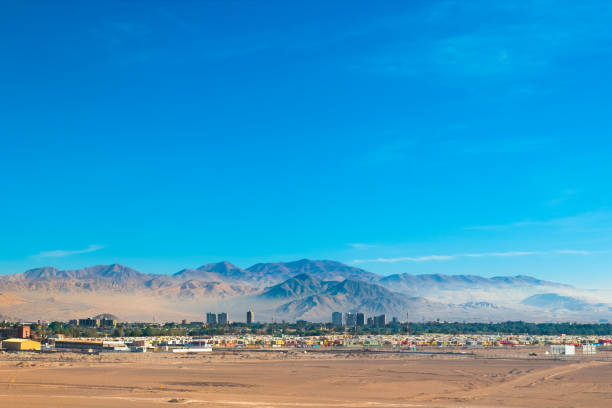
Aventura Atacameña
Recorridos guiados por paisajes naturales, rutas culturales y miradores únicos del desierto de Atacama.
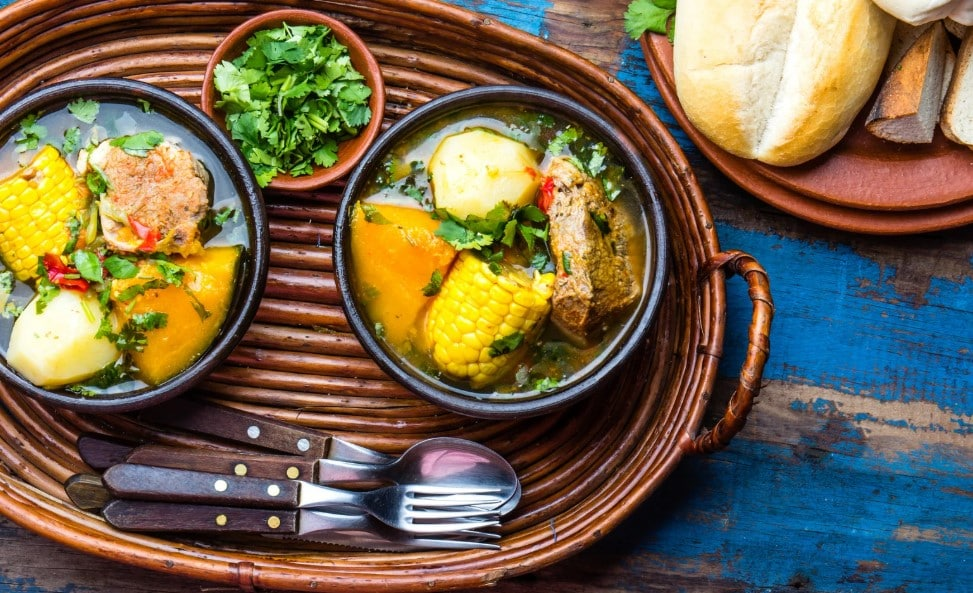
Sabores Nortinos
Descubre comidas típicas inspiradas en la tradición atacameña y los sabores auténticos del norte chileno.
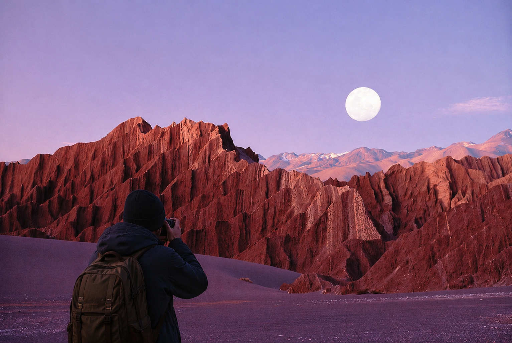
Rutas Fotográficas
Captura paisajes inolvidables, cielos únicos y escenarios naturales perfectos para fotografía.
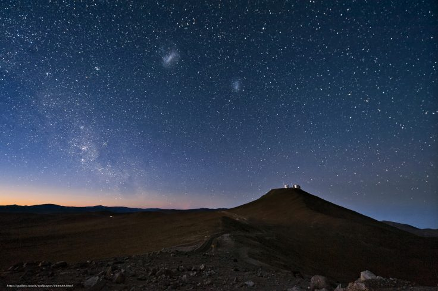
Noches del Desierto
Vive experiencias exclusivas con alojamiento, gastronomía y recorridos bajo los cielos del norte de Chile.
La esencia del norte de Chile
Descubre tradiciones, sabores y expresiones culturales que forman parte de la identidad del desierto de Atacama y sus comunidades ancestrales.
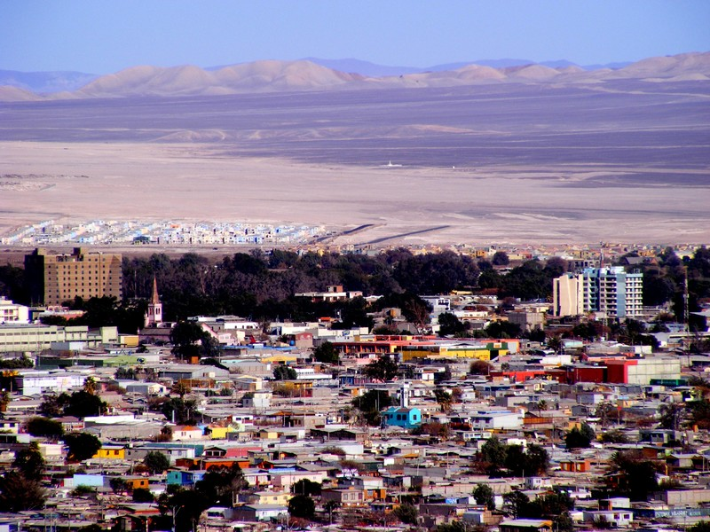
Tradiciones que siguen vivas
La cultura atacameña representa una profunda conexión con el desierto, la naturaleza y las antiguas tradiciones del norte chileno. A través de la música, la artesanía, la gastronomía y las festividades locales, Calama conserva una identidad única llena de historia y simbolismo.
Oasis Calama busca acercar a los visitantes a esta riqueza cultural mediante experiencias auténticas inspiradas en las raíces del territorio y sus comunidades.
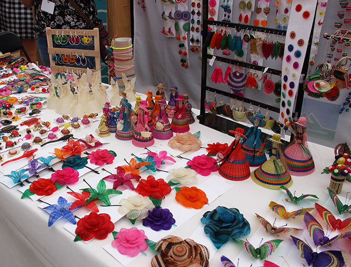
Artesanía local
Tejidos, cerámicas y creaciones inspiradas en las tradiciones ancestrales del desierto.
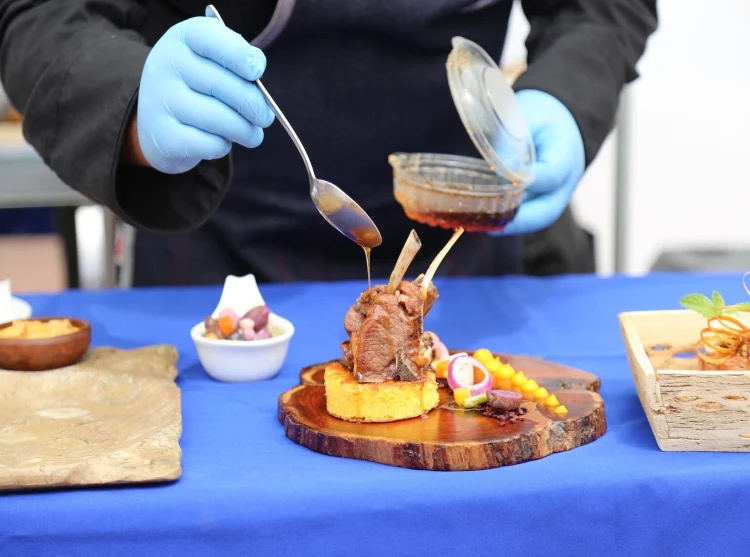
Sabores tradicionales
Ingredientes nortinos y recetas típicas que forman parte de la identidad atacameña.
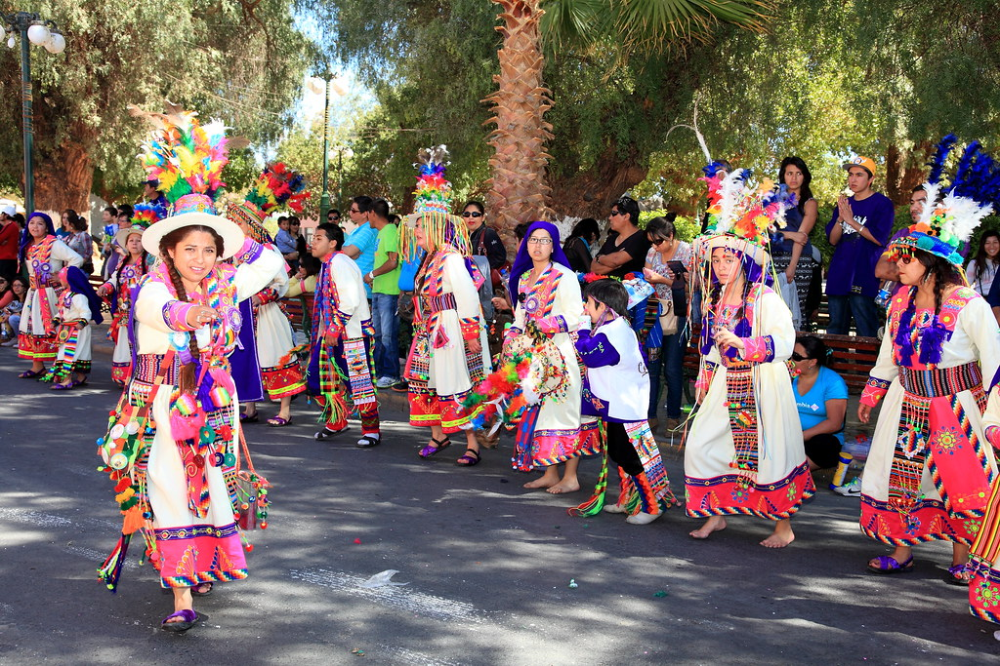
Música y tradiciones
Expresiones culturales y festividades que mantienen viva la esencia del norte chileno.
El desierto también celebra
Vive festividades, recorridos nocturnos y encuentros culturales que transforman el desierto de Atacama en una experiencia llena de música, tradición y aventura.
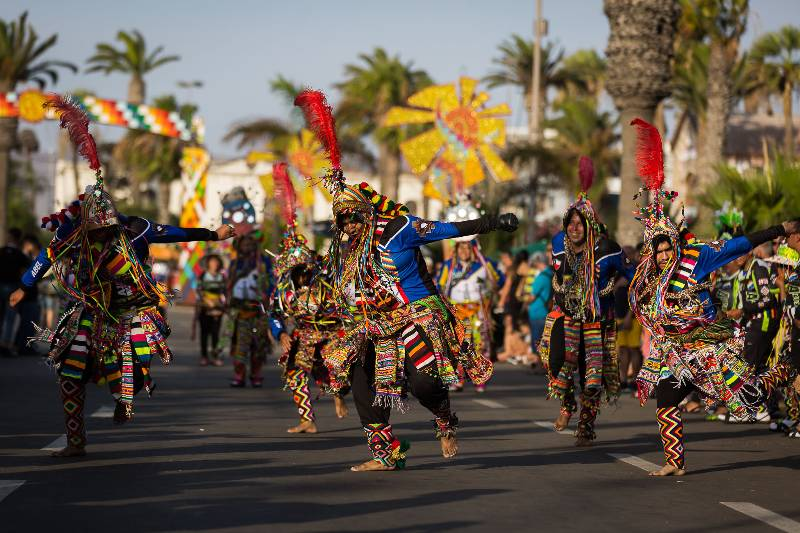
Festival del Sol Andino
Música nortina, gastronomía típica y ceremonias ancestrales que celebran la identidad cultural del desierto de Atacama.
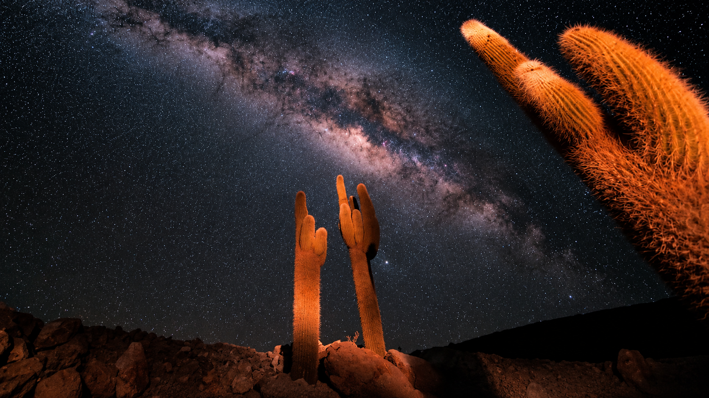
Tour Astronómico
Observa algunos de los cielos más limpios del planeta junto a guías especializados.
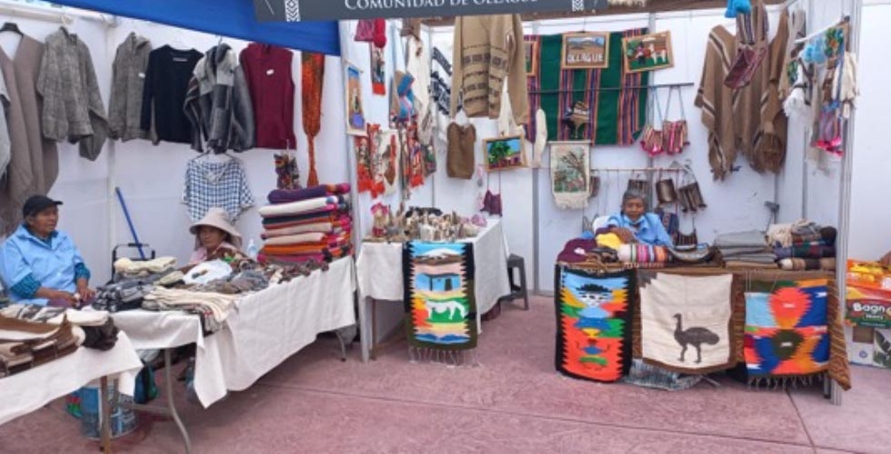
Feria Gastronómica
Sabores típicos, artesanía y tradiciones que representan la esencia del norte chileno.
Explora el desierto con tranquilidad
Cada experiencia en Oasis Calama está diseñada para brindar seguridad, comodidad y una conexión responsable con los paisajes y comunidades del norte de Chile.
Guías certificados
Nuestro equipo cuenta con experiencia en rutas turísticas, primeros auxilios y recorridos seguros por el desierto.
Transporte seguro
Vehículos preparados para recorridos turísticos con supervisión constante y rutas verificadas.
Turismo responsable
Promovemos experiencias sostenibles que respetan la cultura local y el entorno natural del desierto.
Rutas verificadas
Todos los recorridos son evaluados para ofrecer experiencias seguras y organizadas en cada viaje.
Atención permanente
Nuestro equipo está disponible para resolver dudas y acompañarte antes y durante la experiencia.
Equipamiento incluido
Algunas experiencias incluyen implementos básicos para mayor comodidad y seguridad durante el recorrido.